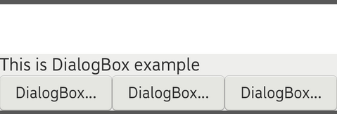
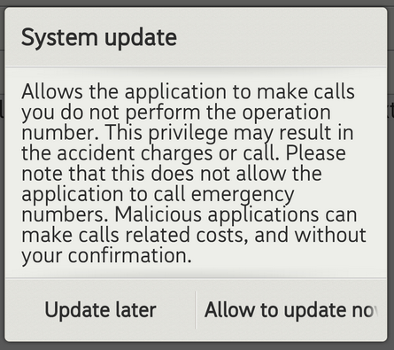
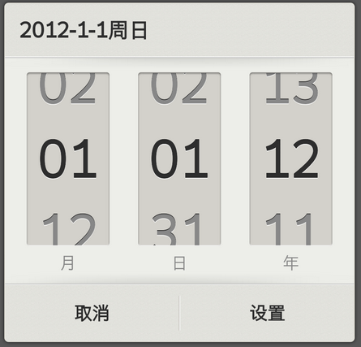
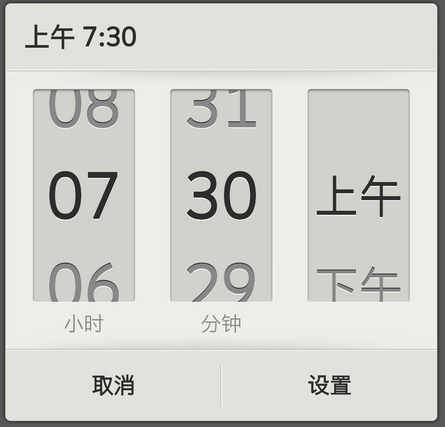
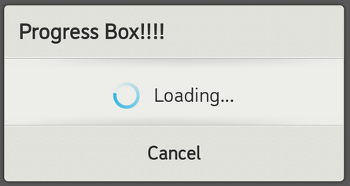

Dialog that GAIA contains five style dialog boxes for developer use.
1. DialogBox :A DialogBox is a small window that user can to make decision or enter additional information.
It is not fill the screen
2. AlertBox :A subclass of DialogBox that can display one, two or three buttons. If you only want to display
a String in this dialog box use the setMessage() method
3. DatepickerBox :A subclass of AlertBox that can display a date picker area.
4. TimePickerBox :A subclass of AlertBox that can display a time picker area.
5. ProgressBox :A subclass of AlertBox that can display a progress bar.

In this section, you can know how to use the DialogBox.
class DialogBoxButtonListener : public gaia::core::OnClickListener {
public:
explicit DialogBoxButtonListener(gaia::core::Page* page) {
}
virtual ~DialogBoxButtonListener() {
}
void onClick(gaia::core::Widget* v) {
}
};
void DialogBoxTest::onInit(gaia::core::Persistence const savedInstanceState) {
Scene scene = Scene::SceneFactory(this);
CHECK_NULL_RETURN(scene);
// new the listener to inform developer, user click which button.
mpListener = new DialogBoxButtonListener(this);
CHECK_NULL_RETURN(mpListener);
//new a button
mpButton1 = new Button(this);
CHECK_NULL_RETURN(mpButton1);
mpButton1->setText(String("Launch DialogBox example"));
mpButton1->setId(0);
mpButton1->setOnClickListener(mpListener);
mpContainer = new LinearController(this);
CHECK_NULL_RETURN(mpContainer);
mpContainer->setOrientation(LinearController::VERTICAL);
mpContainer->setGravity(Gravity::TOP);
//put the Button to the Linearcontroller
mpContainer->addWidget(mpButton1);
scene->attachAndSetupSceneLayout(mpContainer);
}
// Cancel the DialogBox.
// This is essentially the same as calling dismiss(), but it will also call
// IDialogOnCancelListener if registered.
void cancel();
// Dismiss this DialogBox, removing it from the screen.
// Note that you should not do cleanup when the DialogBox is dismissed,
// instead implement that in onStop().
void dismiss();
// Get the status of the DialogBox is currently showing or not.
bool isShowing();
// Called when the back key is pressed.
// return true for intercept back key pressed.
virtual bool onBackKeyPressed();
// Called when the DialogBox is starting.
virtual void onStart();
// Called when the DialogBox is stopping.
virtual void onStop();
// Register OnCancelListener to be invoked when the DialogBox is canceled.
// listener The listener that would like to invoked.
void registerOnCancelListener(IDialogOnCancelListener* listener);
// Register OnDismissListener to be invoked when the DialogBox is dismissed.
// listener The listener that would like to invoked.
void registerOnDismissListener(IDialogOnDismissListener* listener);
// Register OnKeyListener to be invoked when the DialogBox is recieved KeyEvent.
// listener The listener that would like to invoked.
void registerOnKeyListener(IDialogOnKeyListener* listener);
// Register OnShowListener to be invoked when the DialogBox is showed.
// listener The listener that would like to invoked.
void registerOnShowListener(IDialogOnShowListener* listener);
// Set the DialogBox could cancel or not. Default DialogBox is non-cancelable.
// cancelable ture for the DialogBox could cancelable, and else versa.
virtual void setCancelable(bool cancelable);
// Swallow the customized UI to DialogBox.
// widget The customized ui that would show in the DialogBox.
void swallow(gaia::core::Widget* widget);
// Disable the background dim effect. Default DialogBox style is enabled.
void disableDim();
// Set DialogBox will pan or resize when soft input showing.
// mode The DialogBox adjustment option for soft input showing. It could be Scene#SOFT_INPUT_ADJUST_UNSPECIFIED,
// Scene#SOFT_INPUT_ADJUST_RESIZE or Scene#SOFT_INPUT_ADJUST_PAN.
void setSoftInputMode(int32_t mode);
// When finishing all DialogBox settings such as register listener, set DialogBox information or set the content of DialogBox,
// the DialogBox have to trigger these settings before #show.
void setupBox();
// Start the DialogBox and display it on screen.
void show();
};

In this section, you can know how to use the DialogBox.
void DialogDemoAlertBox::onInit(Persistence savedInstanceState) {
// new AlertBox
AlertBox mpalertdialogbox = new AlertBox(this);
// Set the AlertBox could cancel.
mpalertdialogbox->setCancelable(true);
// Set the AlertBox title
mpalertdialogbox->setTitle(gaia::base::String("System update"));
// Set the show message to the AlertBox
mpalertdialogbox->setMessage(gaia::base::String("Allows the application to make calls you do not perform the operation number. This
privilege may result in the accident charges or call. Please note that this does not
allow the application to call emergency numbers. Malicious applications can make calls
related costs, and without your confirmation."));
// add a button to the dialog in right side
mpalertdialogbox->enableButton(AlertBox::BUTTON_POSITIVE, gaia::base::String("Allow to update now"), mpItemClickListener);
// add a button to the dialog in left side
mpalertdialogbox->enableButton(AlertBox::BUTTON_NEGATIVE, gaia::base::String("Update later"), mpItemClickListener);
}
// AlertBox have at most three button. It could configure to enable the Button and show the corresponding string on it.
void enableButton(int32_t which_button, const gaia::base::String& text,
const IDialogOnClickListener* listener);
// Set whether the AlertBox Button is visible, default is visible.
// This function should call after DialogBox#show.
void setButtonVisible(int32_t which_button, bool visible);
// Set whether the AlertBox Button is enabled, default is enabled.
// This function should call after DialogBox#show.
void setButtonEnabled(int32_t which_button, bool enabled);
// Set the AlertBox could cancel or not. Default AlertBox is non-cancelable.
virtual void setCancelable(bool cancelable);
// Set the string that would like to display in the AlertBox.
virtual void setMessage(const gaia::base::String& message) const;
// Set the title text for this AlertBox's window.
virtual void setTitle(const gaia::base::String& title) const;
// Get the string displayed in the AlertBox.
// The returned pointer should be freed by caller.
gaia::base::CharSequence* getMessageN();
// Get the title text displayed in the AlertBox.
// The returned pointer should be freed by caller.
gaia::base::CharSequence* getTitleN();
// Set a list of items to be displayed in the AlertBox as the content,
// you will be notified of the selected item via the supplied listener.
void setItems(int32_t itemId, const IDialogOnClickListener* listener);
// Set a list of items to be displayed in the AlertBox as the content,
// you will be notified of the selected item via the supplied listener.
void setItems(const gaia::base::StringArray& items,
const IDialogOnClickListener* listener);
// Set a list of items, which are supplied by the given provider,
// to be displayed in the AlertBox as the content, you will be notified of the selected item via the supplied listener.
void setProvider(const gaia::ui::IListItemProvider *provider,
const IDialogOnClickListener* listener);
// Set a list of items, which are supplied by the given Cursor, to be displayed in the
// AlertBox as the content, you will be notified of the selected item via the supplied listener.
void setCursor(const gaia::storage::Cursor& cursor,
const IDialogOnClickListener* listener,
const gaia::base::String& labelColumn);
// Set a list of items to be displayed in the AlertBox as the content,
// you will be notified of the selected item via the supplied listener.
// The list will have a check mark displayed to the right of the text for each checked item.
// Clicking on an item in the list will not dismiss the AlertBox.
// Clicking on a button will dismiss the AlertBox.
void setMultiChoiceItems(int32_t itemsId, const bool checkedItems[],
int32_t count,
const IDialogOnMultiChoiceClickListener* listener);
// Set a list of items to be displayed in the AlertBox as the content,
// you will be notified of the selected item via the supplied listener.
// The list will have a check mark displayed to the right of the text for each checked item.
// Clicking on an item in the list will not dismiss the AlertBox.
// Clicking on a button will dismiss the AlertBox.
void setMultiChoiceItems(const gaia::base::StringArray& items,
const bool checkedItems[],
const IDialogOnMultiChoiceClickListener* listener);
// Set a list of items to be displayed in the AlertBox as the content,
// you will be notified of the selected item via the supplied listener.
// The list will have a check mark displayed to the right of the text for each checked item.
// Clicking on an item in the list will not dismiss the AlertBox.
// Clicking on a button will dismiss the AlertBox.
void setMultiChoiceItems(const gaia::storage::Cursor& cursor,
const gaia::base::String& isCheckedColumn,
const gaia::base::String& labelColumn,
const IDialogOnMultiChoiceClickListener* listener);
// Set a list of items to be displayed in the AlertBox as the content,
// you will be notified of the selected item via the supplied listener.
// The list will have a check mark displayed to the right of the text for the checked item.
// Clicking on an item in the list will not dismiss the AlertBox.
// Clicking on a button will dismiss the AlertBox.
void setSingleChoiceItems(int32_t itemsId, int32_t checkedItem,
const IDialogOnClickListener* listener);
// Set a list of items to be displayed in the AlertBox as the content,
// you will be notified of the selected item via the supplied listener.
// The list will have a check mark displayed to the right of the text for the checked item.
// Clicking on an item in the list will not dismiss the AlertBox.
// Clicking on a button will dismiss the AlertBox.
void setSingleChoiceItems(const gaia::storage::Cursor& cursor,
int32_t checkedItem,
const gaia::base::String& labelColumn,
const IDialogOnClickListener* listener);
// Set a list of items to be displayed in the AlertBox as the content,
// you will be notified of the selected item via the supplied listener.
// The list will have a check mark displayed to the right of the text for the checked item.
// Clicking on an item in the list will not dismiss the AlertBox.
// Clicking on a button will dismiss the AlertBox.
void setSingleChoiceItems(const gaia::base::StringArray& items,
int32_t checkedItem,
const IDialogOnClickListener* listener);
// Set a list of items to be displayed in the AlertBox as the content,
// you will be notified of the selected item via the supplied listener.
// The list will have a check mark displayed to the right of the text for the checked item.
// Clicking on an item in the list will not dismiss the AlertBox.
// Clicking on a button will dismiss the AlertBox.
// if no buttons are supplied it's up to the user to dismiss the AlertBox.
void setSingleChoiceItems(const gaia::ui::IListItemProvider *provider,
int32_t checkedItem,
const IDialogOnClickListener* listener);
// Swallow the customized content ui to AlertBox.
void swallow(gaia::core::Widget* widget, bool defaultPadding = 0, int32_t top = 0,
int32_t down = 0);

In this section, you can know how to use the DialogBox.
void DemoDatepickerBox::onInit(Persistence savedInstanceState) {
// new AlertBox
DatePickerBox mpDatePickerBox = new DatePickerBox(this);
mpDatePickerBox->setupBox();
mpDatePickerBox->show();
}
// Register OnDateSetListener to be invoked when the date is set.
void registerOnDateSetListener(IDialogOnDateSetListener* listener);
/**
* @brief Set the date to DatePicker Box
* @param year The year that was set.
* @param monthOfYear The month that was set, please use #DatePickerMonth.
* @param dayOfMonth The day of the month that was set.
*/
void updateDate(int32_t year, int32_t monthOfYear, int32_t dayOfMonth);
/**
* @brief Called when the date is changed.
* @param year The year that was set.
* @param month The month that was set.
* @param day The day of the month that was set.
* @return true for date changed is handled.
*/
virtual bool onDateChanged(int32_t year, int32_t month, int32_t day);

In this section, you can know how to use the DialogBox.
void DemoTimePickerBox::onInit(Persistence savedInstanceState) {
TimePickerBox mpTimePickerBox = new TimePickerBox(this);
mpTimePickerBox->setupBox();
mpTimePickerBox->show();
}
// Register OnTimeSetListener to be invoked when the time is set.
void registerOnTimeSetListener(IDialogOnTimeSetListener* listener);
// Update the display time.
void updateTime(int32_t hourOfDay, int32_t minuteOfHour);
// Called when the time is changed.
virtual bool onTimeChanged(int32_t hourOfDay, int32_t minute);

In this section, you can know how to use the DialogBox.
void DemoprogressBox::onInit(Persistence savedInstanceState) {
ProgressBox mpProgressBoxSpin = new ProgressBox(this);
//GAIA provider two progress style STYLE_SPINNER and STYLE_HORIZONTAL for developer to set
mpProgressBoxSpin->setProgressStyle(ProgressBox::STYLE_SPINNER);
// Set ProgressBox Title
mpProgressBoxSpin->setTitle(gaia::base::String("Progress Box!!!!"));
// Set ProgressBox Message
mpProgressBoxSpin->setMessage(gaia::base::String("Loading..."));
// Enable button to cancel the progressbox
mpProgressBoxSpin->enableButton(AlertBox::BUTTON_NEGATIVE, gaia::base::String("Cancel"), NULL);
mpProgressBoxSpin->setupBox();
}
// Set progress style of ProgressBox
void setProgressStyle(int32_t style) const;
// Set the current progress to the specified value.
void setProgress(int32_t value);
// Set secondary progress value
void setSecondaryProgress(int32_t secondaryProgress);
// Get the progress bar's current level of progress.
int32_t getProgress();
// Get the progress bar's current level of secondary progress.
int32_t getSecondaryProgress();
// Return the upper limit of this progress bar's range.
int32_t getMax();
// Set the upper limit of this progress bar's range.
void setMax(int32_t max);
// Increase the progress bar's progress by the specified amount.
void incrementProgressBy(int32_t diff);
// Increase the progress bar's secondary progress by the specified amount.
void incrementSecondaryProgressBy(int32_t diff);
// Define the drawer used to draw the progress bar in progress mode.
void setProgressDrawable(gaia::graphics::Drawer* d);
// Define the drawer used to draw the progress bar in indeterminate mode.
void setIndeterminateDrawable(gaia::graphics::Drawer* d);
// Change the indeterminate mode for this progress bar.
void setIndeterminate(bool indeterminate);
// Indicate whether this progress bar is in indeterminate mode.
bool isIndeterminate();
// Change the format of the small text showing current and maximum units
// of progress. The default is "%1d/%2d". Should not be called during the number is progressing.
void setProgressNumberFormat(const gaia::base::String& format);
// Called when the progress level is changed.
virtual void onProgressChanged();